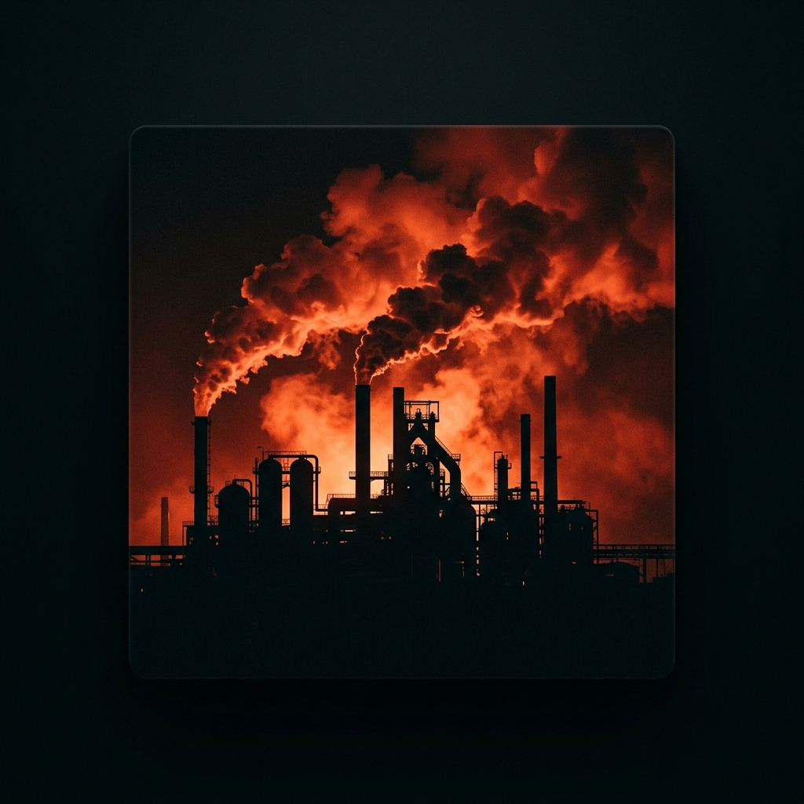
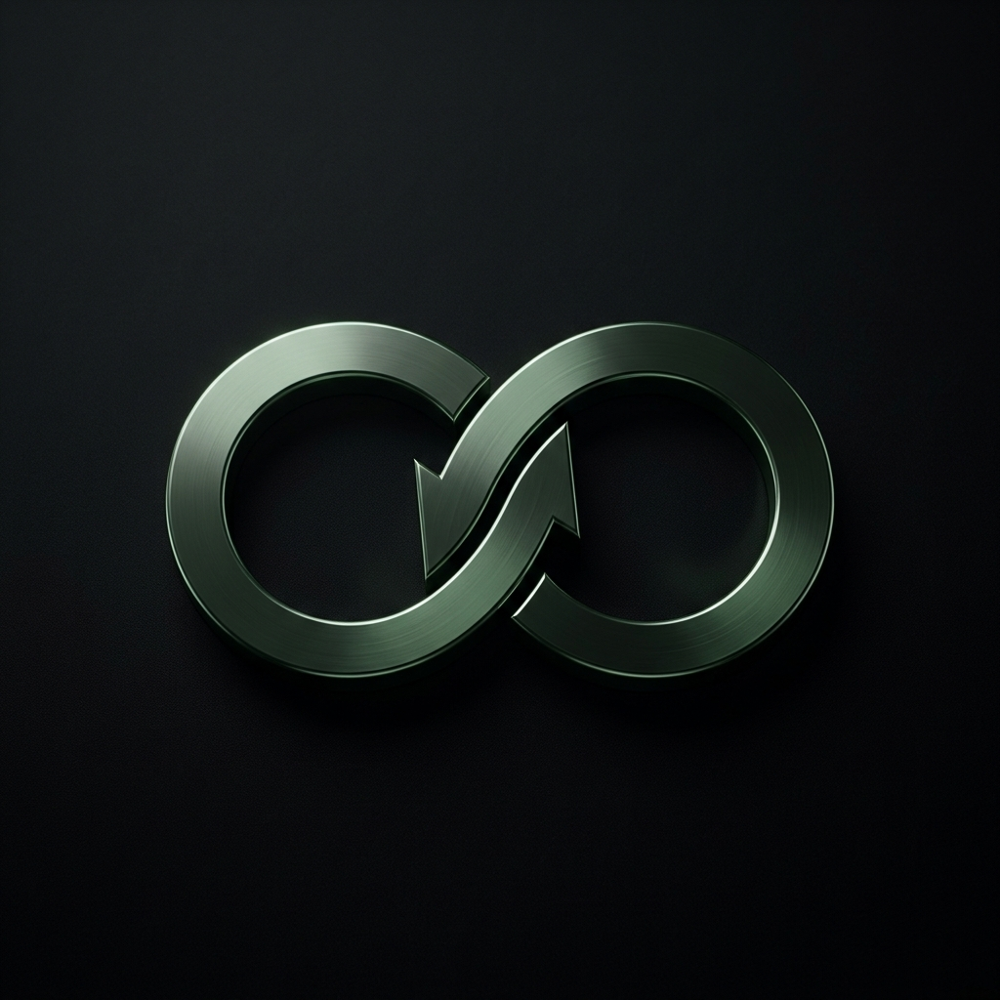

The Foundations
4 pillars of change 4 acts of destruction

01Eco-design Overproduction
Thinking about the lifecycle from inception. Using fewer materials, favoring healthy and sustainable resources. Mass-producing items designed to break. Flooding the market to stimulate artificial demand.

02Longevity Obsolescence
Repair, reuse, share. Usage takes precedence over ownership. A repaired product is a victory. Making repair impossible. Rendering models obsolete via software. Forcing perpetual repurchase.
Recycling Accumulation
Matter becomes a resource again. What was once waste feeds the creation of a new product. Mountains of plastic, saturated oceans. Waste never truly disappears.
Regeneration Depletion
Giving back to the earth more than we take. Restoring biodiversity and degraded ecosystems. Barren soils, exhausted resources. The countdown to total collapse.